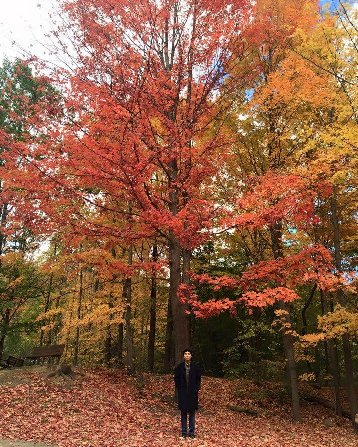

hello there
I'm a seasoned Human Factors researcher with Computer Science background. I sit at the junction between Human-Computer Interaction, Applied Artificial Intelligence, and Software Engineering.
I have a strong record of building complex systems, including web development, data engineering, and machine learning applications. In addition, I have experience in building games and simulations (2D, 3D, and XR).
As a researcher, I'm interested in Inclusive Design to bring benefits to everyone in the community, and for the marginalized community. I design and conduct mixed methods user research, perform professional-level statistical analytics (quant) and qualitative analysis, and share the findings at various levels of audiences from novice to expert.
this was made using skeleton.css
Nov., 2022
I was born in Bielefeld, Western Germany (yes, it exists). I then moved to Seoul, South Korea, where I was a Boy Scout (that's the first time when I went for Bivouac. I know how to swim, play tennis, piano, violin, and Go. I got a South Korean government certificate in computer use when I was 12. I was in TDSB Gifted Program for math since Grade 10.
I used to be a competitive Dota player (2nd place in regional 2011), and used to enjoy playing Counter-Strike, League of Legends, etc. I also have an old classic Sega genesis, N64 console, and a Nintendo Switch. My recent favourite is the game called Alba (that I can play with my daughter)
I like pasta, pizza, hamburger (Rudy's is the best), poutine, Samgyeopsal (삼겹살). As of editing this page, I've read 'Ametora' by Mark W. David and I finished reading 'Modulor' by Le Corbusier, now I'm reading Convivial Toolbox. I used to follow almost all the latest Monocle issues.
I also like things with good kan-ji (感じ) for example:
- Bauhaus-design 'art things'
- Daily stuff like chairs, cups, clothes, sneakers, wristwatches, heavy-duty gears
- all kinds of music, but my favorites are french-touch, bossa-nova, jazz, hip-hop, etc.
Toronto, Fall, 2023, Canada

Toronto, Fall, 2021, Canada

Toronto, Fall, 2016, Canada

Toronto, Fall, 2014, Canada
Toronto, Fall, 2022, Canada

Toronto, Fall, 2019, Canada
Toronto, Fall, 2015, Canada
I have much more stuff written somewhere else, check out my FULL Curriculum Vitae HERE
education
| Doctor of Philosophy (Ph.D.) | Human Factors, Industrial Engineering | University of Toronto | 2016 - 2021 |
| Master of Science (M.Sc.) | Human-Computer Interaction, Computer Science | Toronto Metropolitan University | 2013 - 2016 |
| Honours Bachelor of Science (H.B.Sc.) | Computer Science, Mathematics and Ethnomusicology | Trinity College, University of Toronto | 2007 - 2013 |
experience
In reverse chronological order
| Connected Minds & LAPS Research Fellow | York University |
| Course Director/Lecturer | York University |
| Research Fellow | Toronto Metropolitan University |
| Senior Product Engineer Tech Lead | Scotiabank |
| Data Engineer - Manager | Scotiabank |
| Lecturer | Toronto Metropolitan University |
| Technical Officer III | National Research Council of Canada |
publications
| Nam, S., Karam, M., Christelis, C., Bhargav, H., Fels, D. (2023). Assessing subjective workload for live captioners. Applied Ergonomics, 113, 104094. (SCI/SSCI, IF=3.2) paper |
| Seaborn, K., Rogers, K., Nam, S., Kojima, M. (2023). "Kawaii Game Vocalics: A Preliminary Model." In Extended Abstracts of the Annual Symposium on Computer-Human Interaction in Play Companion Extended Abstracts. paper |
| Nam, S., Fels, D., & Chignell, M. (2023). "Developing a Closed Captioning quality assessment system using a multi-label classifier with active learning from Deaf and Hard of Hearing viewers." Applied Intelligence. (SCI, IF=5.3) paper |
| Seaborn, K., Nam, S., Keckeis, J., Itagaki, T. (2023). "Can Voice Assistants Sound Cute? Towards a Model of Kawaii Vocalics." In Extended Abstracts of the 2023 CHI Conference on Human Factors in Computing Systems. paper |
| Spitschan, M., Mead, J., Roos, C., Lowis, C., Griffiths, B., Mucur, P., Herf, M., Nam, S., & Veitch, J. A. (2022). "luox: novel validated open-access and open-source web platform for calculating and sharing physiologically relevant quantities for light and lighting." Wellcome Open Res, 6, 69. doi:10.12688/wellcomeopenres.16595.3 paper fosdem |
| Nam, S., Fels, D., and Chignell, M. (2021). "Toward a Subjective Assessment System for Closed Captioning Quality", SMPTE Motion Imaging Journal, 130(3), 35-44. (ESCI) paper |
| Nam, S., Fels, D., and Chignell, M. (2020). "Modeling Closed Captioning Subjective Quality Assessment by Deaf and Hard of Hearing Viewers." in IEEE Transactions on Computational Social Systems - Systems, Mans, Cybernetics. (SCIE, acceptance rate=10%, IF=5.14) paper |
| Nam, S. and Fels, D. (2020). "Towards Designing a Subjective Assessment System for The Quality of Closed Captioning Using Artificial Intelligence", NAB Show - Broadcast Engineering and IT Conference. link |
| Nam, S. and Fels, D. (2019). “Simulation of Subjective Closed Captioning Quality Assessment Using Prediction Models.” International Journal of Semantic Computing (ESCI), 13(01), 45-65. paper |
| Nam, S. and Fels, D. (2016). “Design and Evaluation of an Authoring Tool and Notation System for Vibrotactile Composition.” HCII 2016, Toronto, Canada. link |
work archive
Last edit: 2024-05-29
I am slowly trying to squeeze in my works on this website, but most of my works are disseminated/reported in academic/science publications. As of now, I am going to update my portfolio to let the visitors know what I've been working on for the past decade (or more).